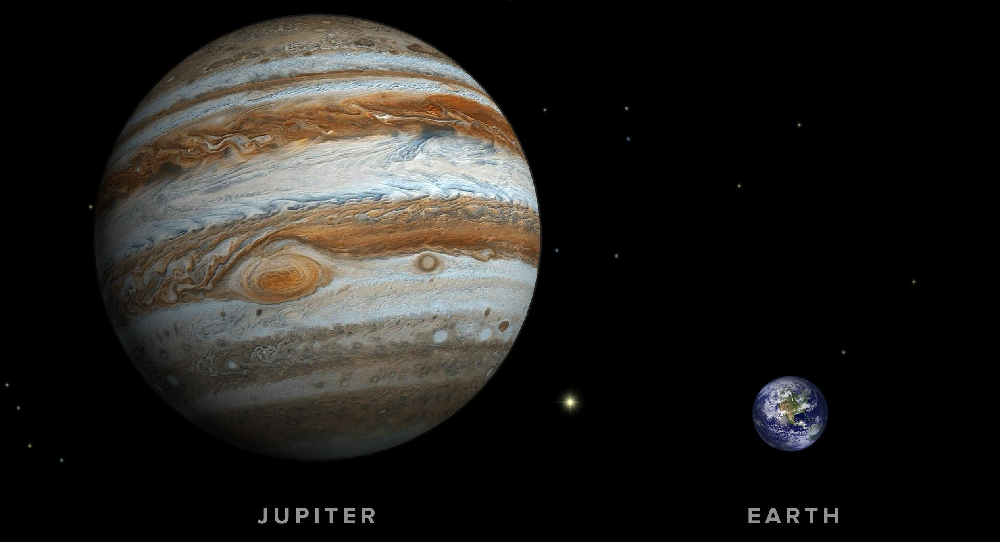
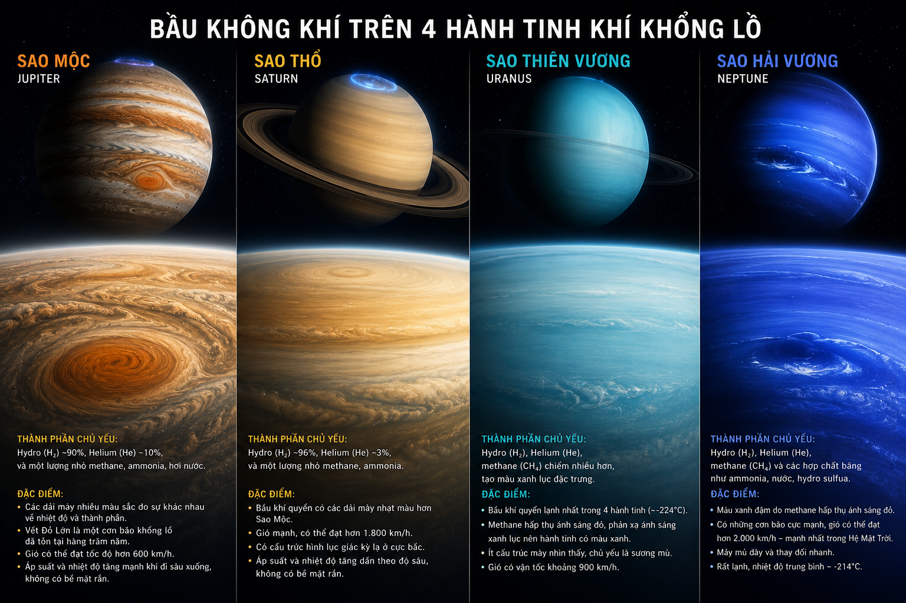
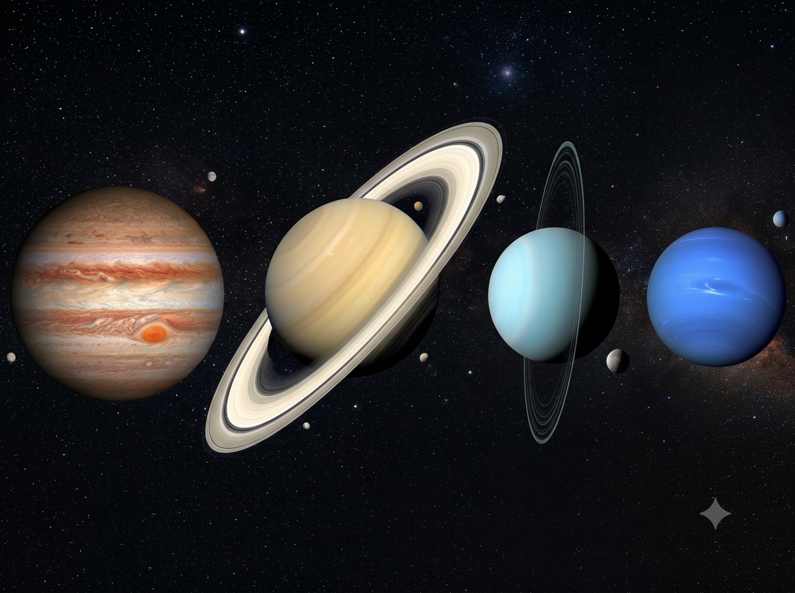
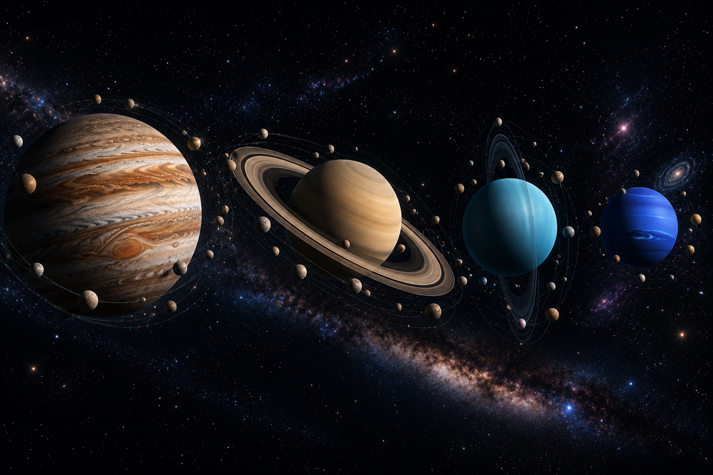
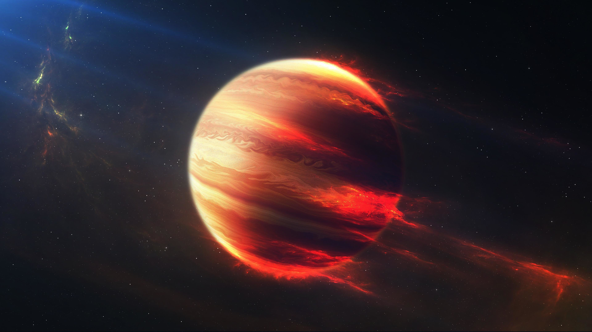
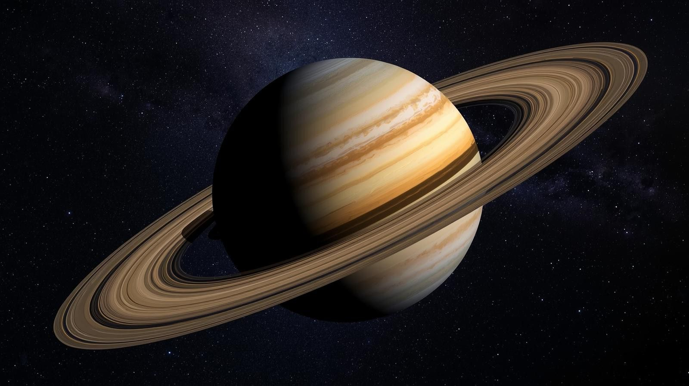
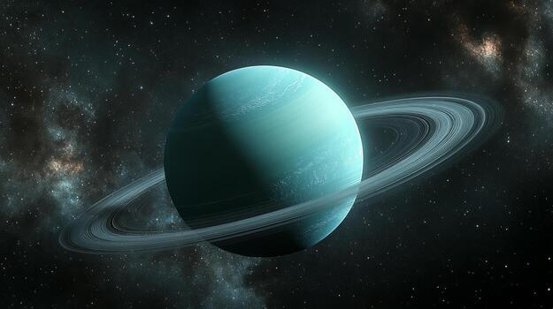
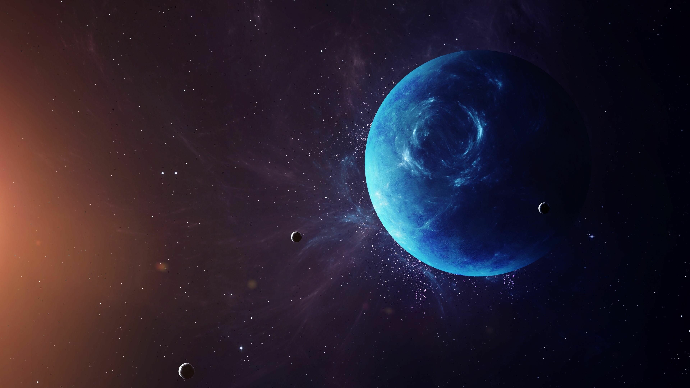

KHÁM PHÁ HỆ MẶT TRỜI
Hành tinh Khí
khổng lồ
Bốn hành tinh khí khổng lồ là những thế giới lớn nhất trong Hệ Mặt Trời. Chúng nổi bật với kích thước khổng lồ, bầu khí quyển dày đặc, hệ vành đai tuyệt đẹp cùng hàng trăm vệ tinh tự nhiên.
Khám phá ngay04
Hành tinh400+
Vệ tinh02
Hệ vành đaiGIỚI THIỆU
Hành tinh khí khổng lồ là gì?
Hành tinh khí khổng lồ là những hành tinh có kích thước rất lớn, thành phần chủ yếu gồm Hydro và Heli. Chúng không có bề mặt rắn như Trái Đất mà được bao phủ bởi lớp khí dày cùng hệ thống vành đai và nhiều vệ tinh tự nhiên.

Kích thước lớn
Sao Mộc lớn gấp hơn 11 lần Trái Đất và là hành tinh lớn nhất Hệ Mặt Trời.

Thành phần khí
Chủ yếu gồm Hydro và Heli, không có bề mặt rắn như các hành tinh đất đá.

Hệ vành đai
Sao Thổ và Sao Thiên Vương nổi tiếng với hệ vành đai rộng lớn bao quanh hành tinh.

Nhiều vệ tinh
Bốn hành tinh khí khổng lồ sở hữu hơn 400 vệ tinh tự nhiên.
Sao Mộc (Jupiter)
Hành tinh lớn nhất trong Hệ Mặt Trời
Sao Mộc là hành tinh lớn nhất trong Hệ Mặt Trời với khối lượng gấp khoảng 318 lần Trái Đất. Hành tinh này nổi tiếng với Vết Đỏ Lớn – một cơn bão khổng lồ tồn tại suốt hàng trăm năm.
Sao Thổ (Saturn)
Hành tinh có hệ vành đai đẹp nhất
Sao Thổ nổi tiếng with hệ thống vành đai khổng lồ được cấu tạo từ hàng tỷ mảnh băng và đá nhỏ. Đây cũng là hành tinh có mật độ thấp nhất trong Hệ Mặt Trời.
Sao Thiên Vương (Uranus)
Hành tinh quay nghiêng gần 98°
Sao Thiên Vương có màu xanh nhạt đặc trưng do khí Metan hấp thụ ánh sáng đỏ. Trục quay gần như nằm ngang khiến nó có chuyển động rất khác so với các hành tinh còn lại.
Sao Hải Vương (Neptune)
Hành tinh xa Mặt Trời nhất
Sao Hải Vương nổi tiếng với những cơn gió có tốc độ hơn 2.000 km/h, mạnh nhất trong Hệ Mặt Trời. Một năm trên hành tinh này kéo dài khoảng 165 năm Trái Đất.
KHÁM PHÁ
Dòng thời gian khám phá
Sao Mộc
Galileo Galilei quan sát bốn vệ tinh lớn đầu tiên của Sao Mộc.
Sao Thổ
Những quan sát đầu tiên mở đường cho việc nghiên cứu hệ vành đai.
Sao Thiên Vương
William Herschel phát hiện Sao Thiên Vương bằng kính thiên văn.
Sao Hải Vương
Được phát hiện nhờ các tính toán toán học trước khi quan sát trực tiếp.
SO SÁNH
Thông số các hành tinh khí khổng lồ
| Hành tinh | Đường kính | Số vệ tinh | Nhiệt độ | Chu kỳ quay |
|---|---|---|---|---|
| Sao Mộc | 139.820 km | 95+ | -145°C | 9 giờ 56 phút |
| Sao Thổ | 116.460 km | 146+ | -178°C | 10,7 giờ |
| Sao Thiên Vương | 50.724 km | 27 | -224°C | 17 giờ |
| Sao Hải Vương | 49.244 km | 14 | -214°C | 16 giờ |
Fun Facts
Những điều thú vị
Vết Đỏ Lớn
Cơn bão trên Sao Mộc đã tồn tại hơn 300 năm và vẫn đang tiếp tục hoạt động.
Vành đai Sao Thổ
Hệ vành đai của Sao Thổ trải dài hàng trăm nghìn kilomet nhưng lại rất mỏng.
Trục quay đặc biệt
Sao Thiên Vương gần như nằm ngang khi quay quanh Mặt Trời.
Gió mạnh nhất
Trên Sao Hải Vương có những cơn gió đạt hơn 2.000 km/h.
Thư viện
Hình ảnh các hành tinh

Sao Mộc
Hành tinh lớn nhất Hệ Mặt Trời.

Sao Thổ
Nổi tiếng với hệ vành đai tuyệt đẹp.

Sao Thiên Vương
Hành tinh có màu xanh nhạt đặc trưng.

Sao Hải Vương
Nơi có những cơn gió mạnh nhất Hệ Mặt Trời.